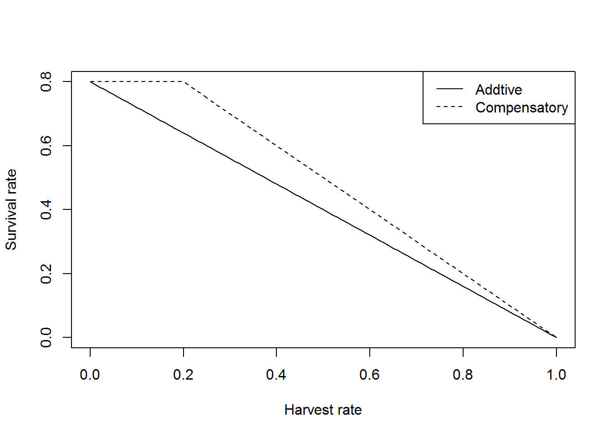

The objectives of this class are to:
#install.packages("adagio")In this class we will continue with the pig decision network we started last class. One of the issues we started to see last class was there were some combinations in our conditional probability tables that were a bit sparse. Specifically, because we were using Poisson distribution on the initial values. One way around this issue is to use a random uniform distribution to ensure you cover all the parameter space. But you may be thinking this might not accurately represent the initial conditions, but it is OK Netica takes care of it.
First let’s set up our simulation again.
F_j=c(0.13,0.56,1.64)# poor, intermediate, good
F_y=c(0.56,0.94,1.93)
F_a =c(1.64,1.76,2.29)
S_j=c(0.25,0.31,0.58)
S_y=c(0.31,0.40,0.66)
S_a =c(0.58,0.60,0.71)
set.seed(8433)
reps<- 250000
outcomes<- data.frame(
condition=sample(c(1:3),reps,replace=TRUE),
n0_j=round(runif(reps,25,175),0),
n0_y=round(runif(reps,0,50),0),
n0_a=round(runif(reps,0,100),0))
outcomes$n1_j<-rpois(reps,outcomes$n0_j*F_j[outcomes$condition])+
rpois(reps,outcomes$n0_y*F_y[outcomes$condition])+
rpois(reps,outcomes$n0_a*F_a[outcomes$condition])
outcomes$n1_y<- rbinom(reps,outcomes$n0_j,S_j[outcomes$condition])
outcomes$n1_a<- rbinom(reps,outcomes$n0_y,S_y[outcomes$condition])+
rbinom(reps,outcomes$n0_a,S_a[outcomes$condition])The major difference in the code above is the use of the runif() and the round() function to sample across the possible combinations of initial abundances of juveniles, yearlings, and adults. Now we can use the cut() function to discretize our outcomes.
# Juveniles Initial Abundance
bins<- seq(0,175,length.out=5)
labs<- paste(bins[-length(bins)],bins[-1],sep="-")
outcomes$n0_j_bin<-cut(outcomes$n0_j,
breaks=bins,
labels=labs,
include.lowest=TRUE)
# Juveniles Future Abundance
bins<- seq(0,650,length.out=5)
labs<- paste(bins[-length(bins)],bins[-1],sep="-")
outcomes$n1_j_bin<-cut(outcomes$n1_j,
breaks=bins,
labels=labs,
include.lowest=TRUE)
# Yearling Initial Abundance
bins<- seq(0,50,length.out=5)
labs<- paste(bins[-length(bins)],bins[-1], sep = "-")
outcomes$n0_y_bin<- cut(outcomes$n0_y,
breaks=bins,
labels=labs,
include.lowest=TRUE)
# Yearling Future Abundance
bins<- seq(0,200,length.out=5)
labs<- paste(bins[-length(bins)],bins[-1],sep="-")
outcomes$n1_y_bin<- cut(outcomes$n1_y,
breaks=bins,
labels=labs,
include.lowest=TRUE)
# Adult Initial Abundance
bins<- seq(0,100,length.out=5)
labs<- paste(bins[-length(bins)],bins[-1],sep="-")
outcomes$n0_a_bin<- cut(outcomes$n0_a,
breaks=bins,
labels=labs,
include.lowest=TRUE)
# Adult Future Abundance
bins<- seq(0,200,length.out=5)
labs<- paste(bins[-length(bins)],bins[-1],sep="-")
outcomes$n1_a_bin<- cut(outcomes$n1_a,
breaks=bins,
labels=labs,
include.lowest=TRUE)Whoa, that is done, what a bit of work to discretize all those values of future abundance.
Now we can use the dcast() function again to summarize the frequencies and calculate the conditional probabilities of the outcomes.
library(reshape2) # for the dcast function## Warning: package 'reshape2' was built under R version 3.1.3outcomes$tmp<-1 # a value to sum over for counts
future_juveniles<- dcast(data=outcomes,
formula=n0_j_bin+n0_y_bin+n0_a_bin+condition~n1_j_bin,
value.var="tmp",
fun.aggregate=sum,
drop=FALSE)
future_yearlings<- dcast(data=outcomes,
formula=n0_j_bin+condition~n1_y_bin,
value.var="tmp",
fun.aggregate=sum,
drop=FALSE)
future_adults<- dcast(data=outcomes,
formula=n0_a_bin+n0_j_bin+condition~n1_a_bin,
value.var="tmp",
fun.aggregate=sum,
drop=FALSE) Using the prop.table() function we ca get the relative frequency, probabilities for each outcomes within each combination of nodes influencing future abundance.
future_juveniles[,-c(1:4)]<- prop.table(
as.matrix(future_juveniles[,-c(1:4)]),
margin=1)
future_yearlings[,-c(1,2)]<- prop.table(
as.matrix(future_yearlings[,-c(1,2)]),
margin=1)
future_adults[,-c(1:3)]<- prop.table(
as.matrix(future_adults[,-c(1:3)]),
margin=1)Now we can save those values as a *.csv to easily copy and paste those values into the conditional probability tables for future abundance notes.
write.csv(future_juveniles,"future_juveniles.csv")
write.csv(future_yearlings,"future_yearlings.csv")
write.csv(future_adults,"future_adults.csv")Only 2 things lacking right now, we need a utility and some decisions to evaluate.
The original paper suggested using hunting to control the population. Suppose managers proposed that it would be feasible to harvest adults only, all life stages, and No harvest at the rates below:
The harvest will influence the future abundance of each stage so we need to account for that in our simulaton of the outcomes.
F_j=c(0.13,0.56,1.64)# poor, intermediate, good
F_y=c(0.56,0.94,1.93)
F_a =c(1.64,1.76,2.29)
S_j=c(0.25,0.31,0.58)
S_y=c(0.31,0.40,0.66)
S_a =c(0.58,0.60,0.71)
set.seed(8433)
reps<- 250000
outcomes<- data.frame(
condition=sample(c(1:3),reps,replace=TRUE),
n0_j=round(runif(reps,25,175),0),
n0_y=round(runif(reps,0,50),0),
n0_a=round(runif(reps,0,100),0),
decision=sample(c(1:7),reps,replace=TRUE)) The set up is similar to the code before but we are adding a matrix of harvest values. It is set up so a row represents a decision alternative, 1:7, for each life stage as columns.
harvest_matrix<- matrix(0,nrow=7, ncol=3)
harvest_matrix[1,] <- c(0,0,0.05)
harvest_matrix[2,] <- c(0,0,0.10)
harvest_matrix[3,] <- c(0,0,0.15)
harvest_matrix[4,] <- c(0.05,0.05,0.05)
harvest_matrix[5,] <- c(0.05,0.05,0.05)
harvest_matrix[6,] <- c(0.05,0.05,0.05)
harvest_matrix[7,] <- c(0.00,0.00,0.00) Now we can use the harvest matrix values with the condition dependent survival rate to simulate the number of juveniles.
outcomes$n1_j<-rpois(reps,rbinom(reps,outcomes$n0_j,1-harvest_matrix[outcomes$decision,1])*F_j[outcomes$condition])+
rpois(reps,rbinom(reps,outcomes$n0_y,1-harvest_matrix[outcomes$decision,2])*F_y[outcomes$condition])+
rpois(reps,rbinom(reps,outcomes$n0_a,1-harvest_matrix[outcomes$decision,3])*F_a[outcomes$condition])And we can simulate the yearlings and adults.
outcomes$n1_y<- rbinom(reps,outcomes$n0_j,1-harvest_matrix[outcomes$decision,1]*S_j[outcomes$condition])
outcomes$n1_a<- rbinom(reps,outcomes$n0_y,1-harvest_matrix[outcomes$decision,2]*S_y[outcomes$condition])+
rbinom(reps,outcomes$n0_a,1-harvest_matrix[outcomes$decision,3]*S_a[outcomes$condition])Now, same as before we can bin up the initial values and future values for juveniles, yearlings and adults.
# Juveniles Initial Abundance
bins<- seq(0,175,length.out=5)
labs<- paste(bins[-length(bins)],bins[-1],sep="-")
outcomes$n0_j_bin<-cut(outcomes$n0_j,
breaks=bins,
labels=labs,
include.lowest=TRUE)
# Juveniles Future Abundance
bins<- seq(0,650,length.out=5)
labs<- paste(bins[-length(bins)],bins[-1],sep="-")
outcomes$n1_j_bin<-cut(outcomes$n1_j,
breaks=bins,
labels=labs,
include.lowest=TRUE)
# Yearling Initial Abundance
bins<- seq(0,50,length.out=5)
labs<- paste(bins[-length(bins)],bins[-1], sep = "-")
outcomes$n0_y_bin<- cut(outcomes$n0_y,
breaks=bins,
labels=labs,
include.lowest=TRUE)
# Yearling Future Abundance
bins<- seq(0,200,length.out=5)
labs<- paste(bins[-length(bins)],bins[-1],sep="-")
outcomes$n1_y_bin<- cut(outcomes$n1_y,
breaks=bins,
labels=labs,
include.lowest=TRUE)
# Adult Initial Abundance
bins<- seq(0,100,length.out=5)
labs<- paste(bins[-length(bins)],bins[-1],sep="-")
outcomes$n0_a_bin<- cut(outcomes$n0_a,
breaks=bins,
labels=labs,
include.lowest=TRUE)
# Adult Future Abundance
bins<- seq(0,200,length.out=5)
labs<- paste(bins[-length(bins)],bins[-1],sep="-")
outcomes$n1_a_bin<- cut(outcomes$n1_a,
breaks=bins,
labels=labs,
include.lowest=TRUE)And we can then calculate the frequency of each outcome and calculate the conditional probabilities.
library(reshape2) # for the dcast function
outcomes$tmp<-1 # a value to sum over for counts
future_juveniles<- dcast(data=outcomes,
formula=n0_j_bin+n0_y_bin+n0_a_bin+condition+decision~n1_j_bin,
value.var="tmp",
fun.aggregate=sum,
drop=FALSE)
future_yearlings<- dcast(data=outcomes,
formula=n0_j_bin+condition+decision~n1_y_bin,
value.var="tmp",
fun.aggregate=sum,
drop=FALSE)
future_adults<- dcast(data=outcomes,
formula=n0_a_bin+n0_j_bin+condition+decision~n1_a_bin,
value.var="tmp",
fun.aggregate=sum,
drop=FALSE)
future_juveniles[,-c(1:5)]<- prop.table(as.matrix(future_juveniles[,-c(1:5)]),1)
future_yearlings[,-c(1:3)]<- prop.table(as.matrix(future_yearlings[,-c(1:3)]),1)
future_adults[,-c(1:4)]<- prop.table(as.matrix(future_adults[,-c(1:4)]),1)And save them for copy and pasting into the conditional probability tables.
write.csv(future_juveniles,"future_juveniles-with-decisions.csv")
write.csv(future_yearlings,"future_yearlings-with-decisions.csv")
write.csv(future_adults,"future_adults-with-decisions.csv")Now we can add those tables to the Pigs 2 network which now has a decision node and a utility that calculates the population abundance. Let’s explore this.
Ok, we talked previously about various sources of uncertainty and we added some parametric uncertainty by making use of rpois() and rbinom() to calculate the conditional probabilities. One of the other uncertainties we can deal with include observation and structural. We will learn a bit about structural uncertainty here.
What do we mean by structural uncertainty? Well structural uncertainty is where we do have complete understanding of the underlying process. How does this apply to our pig example? Well we are applying harvest as a potential way to control the population and the application of this harvest mortality may be additive or compensatory. Specifically, additive morality is simply the condition and stage specific survival times the harvest rate. A compensatory rate allows condition and stage specific survival to remain constant in the presence of additional harvest mortality (i.e., doomed surplus), at least until harvest mortality exceeds natural mortality.
Let’s visualize this real quick. Suppose we have a baseline survival of 0.8 and we are evaluating a harvest rate varying from 0 to 1.
S<- 0.8
H<- seq(0,1,by=0.01)
# additive
S_add<- S*(1-H)
# compensatory
C<- 1-S
b<-ifelse(H > C,1,0)
S_comp<-ifelse (H > C, (S*(1-b*H))/(1-C), S*(1-b*H))
# plot results
plot(x=H,y=S_add,
xlab="Harvest rate",
ylab="Survival rate",
type='l',
lty=1)
points(x=H,y=S_comp,type='l',lty=2)
legend("topright",c("Addtive","Compensatory"),
lty=c(1,2)) The setup is the same as before to generate the possible outcomes.
F_j=c(0.13,0.56,1.64)# poor, intermediate, good
F_y=c(0.56,0.94,1.93)
F_a =c(1.64,1.76,2.29)
S_j=c(0.25,0.31,0.58)
S_y=c(0.31,0.40,0.66)
S_a =c(0.58,0.60,0.71)
set.seed(8433)
reps<- 500000
outcomes<- data.frame(
condition=sample(c(1:3),reps,replace=TRUE),
n0_j=round(runif(reps,25,175),0),
n0_y=round(runif(reps,0,50),0),
n0_a=round(runif(reps,0,100),0),
decision=sample(c(1:7),reps,replace=TRUE),
mortalityType=sample(c(1:2),reps,replace=TRUE))# 1 add, 2 pc, 3, compNow we add the matrix of decisions
harvest_matrix<- matrix(0,nrow=7, ncol=3)
harvest_matrix[1,] <- c(0,0,0.05)
harvest_matrix[2,] <- c(0,0,0.10)
harvest_matrix[3,] <- c(0,0,0.15)
harvest_matrix[4,] <- c(0.05,0.05,0.05)
harvest_matrix[5,] <- c(0.10,0.10,0.10)
harvest_matrix[6,] <- c(0.15,0.15,0.15)
harvest_matrix[7,] <- c(0.00,0.00,0.00) Now here is where it gets a bit different, we need to take the condition and stage specific baseline survivals that will be adjusted depending on whether harvest mortality is additive or compensatory.
Here goes for juveniles.
# BASELINE SURVIVAL FOR JUVENILES
outcomes$S_j<- S_j[outcomes$condition]# condition specific survival
## ADDITIVE
indx_add<- which(outcomes$mortalityType==1)
outcomes[indx_add,]$S_j<-outcomes[indx_add,]$S_j*(1-harvest_matrix[outcomes[indx_add,]$decision,3])
## COMPENSATORY
indx_c<- which(outcomes$mortalityType==2)
C<- 1-outcomes[indx_c,]$S_j
H<- harvest_matrix[outcomes[indx_c,]$decision,3]
b<-ifelse(H > C,1,0)
outcomes[indx_c,]$S_j<-ifelse (H > C,
(outcomes[indx_c,]$S_j*(1-b*H))/(1-C),
outcomes[indx_c,]$S_j*(1-b*H)) Now we can do it for yearlings.
# BASELINE SURVIVAL FOR YEARLINGS
outcomes$S_y<- S_y[outcomes$condition]# condition specific survival
## ADDITIVE
indx_add<- which(outcomes$mortalityType==1)
outcomes[indx_add,]$S_y<-outcomes[indx_add,]$S_y*(1-harvest_matrix[outcomes[indx_add,]$decision,1])
## COMPENSATORY
indx_c<- which(outcomes$mortalityType==2)
C<- 1-outcomes[indx_c,]$S_y
H<- harvest_matrix[outcomes[indx_c,]$decision,1]
b<-ifelse(H > C,1,0)
outcomes[indx_c,]$S_y<-ifelse (H > C,
(outcomes[indx_c,]$S_y*(1-b*H))/(1-C),
outcomes[indx_c,]$S_y*(1-b*H)) And finally, for the adults.
# BASELINE SURVIVAL FOR ADULTS
outcomes$S_a<- S_a[outcomes$condition]# condition specific survival
## ADDITIVE
indx_add<- which(outcomes$mortalityType==1)
outcomes[indx_add,]$S_a<-outcomes[indx_add,]$S_a*(1-harvest_matrix[outcomes[indx_add,]$decision,1])
## COMPENSATORY
indx_c<- which(outcomes$mortalityType==2)
C<- 1-outcomes[indx_c,]$S_a
H<- harvest_matrix[outcomes[indx_c,]$decision,3]
b<-ifelse(H > C,1,0)
outcomes[indx_c,]$S_a<-ifelse (H > C,
(outcomes[indx_c,]$S_a*(1-b*H))/(1-C),
outcomes[indx_c,]$S_a*(1-b*H)) Yeah, we are doing something awesome here. Now we can use our new survivals to simulate the potential outcomes.
## FUTURE NUMBER OF JUVENILES
outcomes$n1_j<-rpois(reps,rbinom(reps,outcomes$n0_j,outcomes$S_j)*F_j[outcomes$condition])+
rpois(reps,rbinom(reps,outcomes$n0_y,outcomes$S_y)*F_y[outcomes$condition])+
rpois(reps,rbinom(reps,outcomes$n0_a,outcomes$S_a)*F_a[outcomes$condition])
## FUTURE NUMBER OF JUVENILES
outcomes$n1_y<- rbinom(reps,outcomes$n0_j,outcomes$S_j)
## FUTURE NUMBER OF ADULTS
outcomes$n1_a<- rbinom(reps,outcomes$n0_y,outcomes$S_y)+
rbinom(reps,outcomes$n0_a,outcomes$S_a)Next up just as before we are going to discrete this thing.
# Juveniles Initial Abundance
bins<- seq(0,175,length.out=5)
labs<- paste(bins[-length(bins)],bins[-1],sep="-")
outcomes$n0_j_bin<-cut(outcomes$n0_j,
breaks=bins,
labels=labs,
include.lowest=TRUE)
# Juveniles Future Abundance
bins<- seq(0,650,length.out=5)
labs<- paste(bins[-length(bins)],bins[-1],sep="-")
outcomes$n1_j_bin<-cut(outcomes$n1_j,
breaks=bins,
labels=labs,
include.lowest=TRUE)
# Yearling Initial Abundance
bins<- seq(0,50,length.out=5)
labs<- paste(bins[-length(bins)],bins[-1], sep = "-")
outcomes$n0_y_bin<- cut(outcomes$n0_y,
breaks=bins,
labels=labs,
include.lowest=TRUE)
# Yearling Future Abundance
bins<- seq(0,200,length.out=5)
labs<- paste(bins[-length(bins)],bins[-1],sep="-")
outcomes$n1_y_bin<- cut(outcomes$n1_y,
breaks=bins,
labels=labs,
include.lowest=TRUE)
# Adult Initial Abundance
bins<- seq(0,100,length.out=5)
labs<- paste(bins[-length(bins)],bins[-1],sep="-")
outcomes$n0_a_bin<- cut(outcomes$n0_a,
breaks=bins,
labels=labs,
include.lowest=TRUE)
# Adult Future Abundance
bins<- seq(0,200,length.out=5)
labs<- paste(bins[-length(bins)],bins[-1],sep="-")
outcomes$n1_a_bin<- cut(outcomes$n1_a,
breaks=bins,
labels=labs,
include.lowest=TRUE)Now we can discretize, we just need to be sure that we add the mortality type to the frequency table.
library(reshape2) # for the dcast function
outcomes$tmp<-1 # a value to sum over for counts
future_juveniles<- dcast(data=outcomes,
formula=n0_j_bin+n0_y_bin+n0_a_bin+condition+decision+mortalityType~n1_j_bin,
value.var="tmp",
fun.aggregate=sum,
drop=FALSE)
future_yearlings<- dcast(data=outcomes,
formula=n0_j_bin+condition+decision+mortalityType~n1_y_bin,
value.var="tmp",
fun.aggregate=sum,
drop=FALSE)
future_adults<- dcast(data=outcomes,
formula=n0_a_bin+n0_j_bin+condition+decision+mortalityType~n1_a_bin,
value.var="tmp",
fun.aggregate=sum,
drop=FALSE)
future_juveniles[,-c(1:6)]<- prop.table(as.matrix(future_juveniles[,-c(1:6)]),1)
future_yearlings[,-c(1:4)]<- prop.table(as.matrix(future_yearlings[,-c(1:4)]),1)
future_adults[,-c(1:5)]<- prop.table(as.matrix(future_adults[,-c(1:5)]),1)And we can save our conditional probabilities to copy and paste to the decision network.
write.csv(future_juveniles,"future_juveniles-with-decisions-and-su.csv")
write.csv(future_yearlings,"future_yearlings-with-decisions-and-su.csv")
write.csv(future_adults,"future_adults-with-decisions-and-su.csv")We can now take these new results and use them to parameterize our decision network with this new bit of structural uncertainty. Exciting right! This new file is here.
The use of tools like Bayesian Decision Networks can be a bit laborious but they are great tools to visualize the decision. Another way to go about determining the optimal decision is Monte Carlo. The cool thing is that we already did a big Monte Carlo simulation.
All we need to do is calculate our utility like we did in the BDN.
outcomes$abundance<- outcomes$n1_j+outcomes$n1_y+outcomes$n1_aWe can simply calculate the expected value for each decision given all the uncertainty in current and future abundance, conditions, and mortality type.
ev<- tapply(outcomes$abundance,outcomes$decision,mean)
ev[which.min(ev)]## 6
## 181.0305The one shortcoming of using Monte Carlo sampling is that it is more difficult to add certainty like we did in the BDN. For example, we need to do a subset by mortality type to evaluate the decision alternatives is we knew with 100% certainty that harvest mortality was addtive or compensatory. Cool beans regardless.
library(plyr)
outcomes$abundance<- outcomes$n1_j+outcomes$n1_y+outcomes$n1_a
ev_comp<- dcast(outcomes,decision~"ev",
value.var="abundance",
subset=.(mortalityType==2),
fun.aggregate=mean)
ev<- dcast(outcomes,decision~"ev",
value.var="abundance",
subset=.(mortalityType==1),
fun.aggregate=mean)The Monte Carlo simulation is an ad hoc optimization that we used to decide among decision alternatives given uncertainty. Let’s look at a bit of a different but common decision situation. This is a case where we have finite resources but need to make a decision among varying decisions. In this example we will look at rainbow trout stocking as part of an effort to recruit anglers. Here we can read in the data.
stocking<- read.csv("trout-stocking.csv")
head(stocking)## lake urbanCenter_km politician troutPrivileges
## 1 Ada Hayden Pond 5 1 6973
## 2 DMACC 10 0 4923
## 3 Petoka 16 0 2993
## 4 Bacon Creek 23 0 543
## 5 Big Lake West 24 0 689
## 6 Prairie Park 32 0 5064
## consectutiveYearsStocked requested
## 1 3 5000
## 2 3 5300
## 3 1 1000
## 4 1 800
## 5 3 750
## 6 2 1500In this example district fisheries biologists put in requests for fish to stock in various lakes. But the hitch is there are not enough fish to go around. How do we decide? Well from an agency standpoint, Iowa DNR is interested in their efforts maximizing efforts near urban centers, in areas where trout stamps numbers are high. The other consideration is politically driven, politicians commonly have properties on lakes and when stocking does not occur politicians will usually have words with the Bureau Chief. The other thing that IADNR wants to account for the novelty of the stocking event wearing off. Specifically, trout stamps decline after 3 years of stocking and are better focused elsewhere. We can scale our attributes to a utility that we might be able to optimize. The code below uses a proportional scaling equation to scale these values betweent 0 and 1. We will try use our stocking efforts to maximize our value from stocking.
propscale<-function(x)
{
(x-min(x))/(max(x)-min(x))
}
stocking$uc_scaled<-propscale(stocking$urbanCenter_km)
stocking$pol_scaled<-propscale(stocking$politician)
stocking$priv_scaled<-propscale(stocking$troutPrivileges)
stocking$stocked_scaled<-1-propscale(stocking$consectutiveYearsStocked)
stocking$U<- (stocking$uc_scaled+stocking$pol_scaled+
stocking$priv_scaled+stocking$stocked_scaled)/4From the state resources there are 3 hatcheries with 2000, 3000, and 5500 rainbow trout available for stocking. However 17650 fish were requested but only 10500 available. How do we decide among the requests? Well let’s set up the problem with vectors of fish available and the requests.
troutAvailable<-c(2000,3000,5500)
fish_we_want <- as.integer(stocking$requested)We can use a tool called dynamic programming. Dynamic programming is difficult to comprehend and beyond the scope of what we are up to here but the gist is it calculates the local maximum values for each value and then it passes back though the matrix of values to find the combination that maximizes the utility. Fortunately we don’t have to program this in, some good folks have put a package together that will solve this knapsack problem. Essentially, we have objects that have size and value that need to be fitted in a knapsack of limited size. In the case of the trout stocking case we have 3 knapsacks.
First thing to do is call up the adagio package and specify the value as an integer.
library(adagio)## Warning: package 'adagio' was built under R version 3.1.3value<- as.integer(stocking$U*100)Now we can use the mknapsack() function that returns what fish to take from what hatchery to maximize the utility of stocking.
solution <- mknapsack(value, fish_we_want, troutAvailable)
solution## $ksack
## [1] 0 0 1 2 3 3 1 1 2 3
##
## $value
## [1] 292
##
## $btracks
## [1] 0stocking$hatchery<- solution$ksackThe solution indicates that all but the first 2 requests can be satisfied. This type of programming will set the stage for using stochastic dynamic programming that will be used in adaptive management.